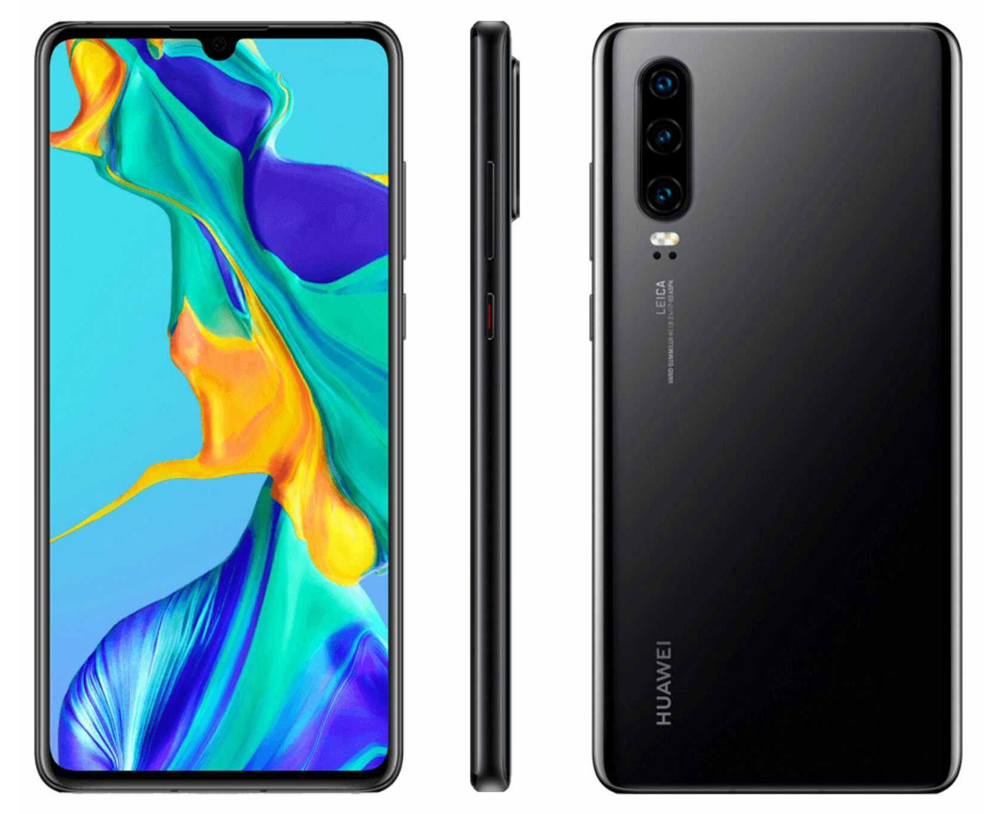

Huawei P30
Hermano de en medio de la serie P

El Huawei P30 Lite es la variante más básica de la nueva serie P30 de Huawei. El Huawei P30 Lite cuenta con una pantalla Full HD+ de 6.15 pulgadas con notch, y está potenciado por un procesador Kirin 710 de ocho núcleos con 4GB de memoria RAM y 128GB de almacenamiento interno. La cámara principal del Huawei P30 Lite es triple, en configuración 24MP + 8MP + 2MP, y su cámara para selfies es de 32MP. Completando sus características, encontramos en el P30 Lite una batería de 3340 mAh, lector de huellas en su posterior, y puerto USB-C.